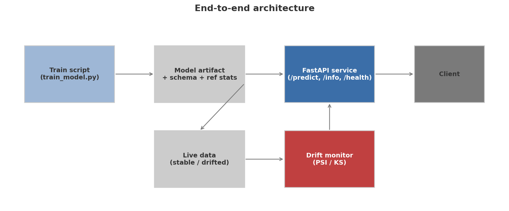
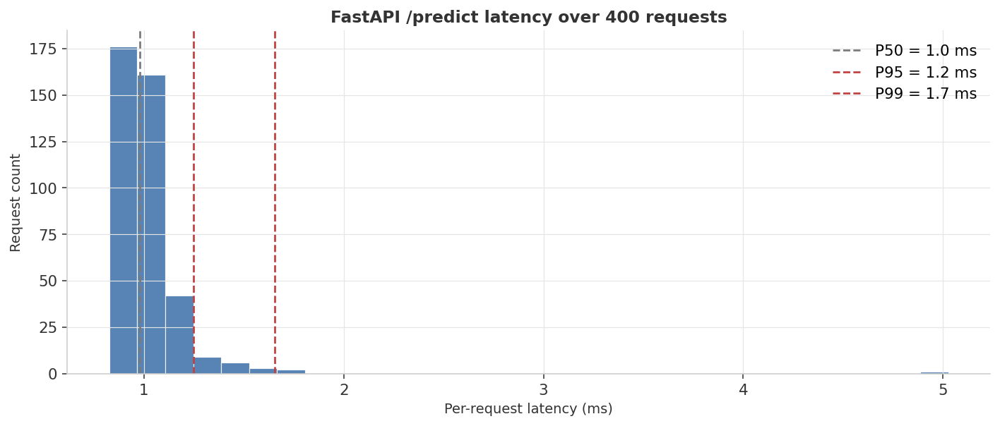
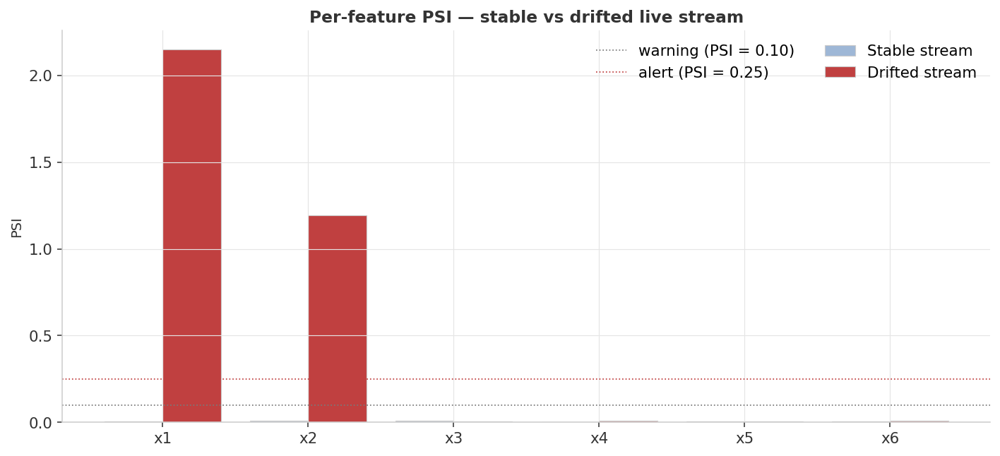
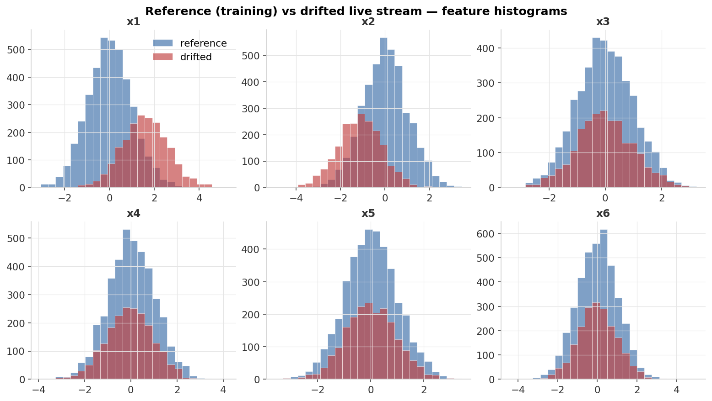

0.986
Test AUC
GradientBoosting · 200 trees depth 3
1.65 ms
p99 Latency
400 in-process requests via TestClient
2.15
Drifted x1 PSI
Alert threshold 0.25 — strong alert
Pipeline scorecard — Latency
| Percentile | Latency (ms) |
|---|---|
| p50 | 0.979 |
| p95 | 1.248 |
| p99 | 1.655 |
400 sequential in-process requests ·
fastapi.testclient.TestClient · lower bound (excludes network, TLS, OS scheduling)Pipeline scorecard — Drift PSI per feature
| Feature | Stable PSI | Drifted PSI |
|---|---|---|
| x1 | 0.0076 | 2.151 |
| x2 | 0.0087 | 1.193 |
| x3 | 0.0080 | 0.0048 |
| x4 | 0.0014 | 0.0080 |
| x5 | 0.0068 | 0.0037 |
| x6 | 0.0061 | 0.0114 |
● orange = alert PSI > 0.25 ● gray = no significant change · values from
results/metrics.jsonPSI thresholds: < 0.10 — no significant change | 0.10–0.25 — moderate shift | > 0.25 — alert (consider retraining). x1 drifted PSI of 2.151 is 8× above the alert threshold; x2 at 1.193 is also a strong alert. x3–x6 remain quiet — the monitor is feature-level actionable.
Visual diagnostics
1 · End-to-end architecture
Five components, three flows: Train produces the artifact bundle (model + schema + reference stats); Serve validates inputs and runs predict_proba; Monitor compares live batches to the reference distribution using PSI and KS.

2 · Latency profile
400 in-process requests via TestClient. Histogram is tight: p50 of 0.98 ms, p99 of 1.65 ms — model evaluation is not the bottleneck for a GradientBoosting model on 6 features.

3 · PSI — drift detection
Per-feature PSI on stable (light blue) vs drifted (red) streams. x1 explodes to 2.15, x2 to 1.19; unaffected features stay below 0.01.

4 · Distribution overlays
Reference (blue) vs drifted (red) histograms per feature. Mean shifts on x1 and x2 are visually obvious; x3–x6 sit on top of each other.

Three-axis validation
Axis 1 — Model quality (held-out test set, 1,000 rows)
Evaluated on rows the model never saw, drawn sequentially after train.
| Metric | Definition | Reads as |
|---|---|---|
| AUC | Area under ROC curve | Probability model ranks a positive above a negative; 1.0 = perfect, 0.5 = coin flip |
| Accuracy | Fraction of predictions correct | Sensitive to class balance; balanced here by symmetric decision rule |
Axis 2 — Service performance (latency percentiles)
400 sequential in-process requests. Percentiles reported over mean: reveal tail behavior the mean hides.
| Percentile | Meaning |
|---|---|
| p50 | Half of requests faster — the "typical" request |
| p95 | 1 in 20 requests exceeds — the SLA you'd negotiate with a caller |
| p99 | 1 in 100 requests exceeds — reveals tail behavior from GC pauses or contention |
Axis 3 — Drift detection (PSI + KS)
PSI quantifies distribution shift from reference; KS provides complementary distribution-free two-sample test.
| Metric | Formula / method | Interpretation |
|---|---|---|
| PSI | Σ (p_current − p_ref) · ln(p_current / p_ref) over 10 decile bins | < 0.10 none · 0.10–0.25 moderate · > 0.25 alert |
| KS stat | scipy.stats.ks_2samp — max absolute difference in CDFs | 0 = identical; 1 = fully separated; p-value near 0 = strong evidence of shift |
Full results
Model quality
| Metric | Value |
|---|---|
| Test AUC | 0.986 |
| Test accuracy | 0.940 |
GradientBoosting · n_estimators=200 · max_depth=3 · random_state=42 · values from README (models/ not committed)
Latency (from results/metrics.json)
| Metric | Value (ms) |
|---|---|
| p50 | 0.9793 |
| p95 | 1.2480 |
| p99 | 1.6547 |
| mean | 1.0220 |
| max | 5.0268 |
Per-feature PSI (from results/metrics.json)
| Feature | Stable PSI | Drifted PSI | Drifted KS stat |
|---|---|---|---|
| x1 | 0.007563 | 2.150747 | 0.57425 |
| x2 | 0.008676 | 1.192950 | 0.43700 |
| x3 | 0.008000 | 0.004769 | 0.01875 |
| x4 | 0.001372 | 0.008030 | 0.03450 |
| x5 | 0.006805 | 0.003670 | 0.01525 |
| x6 | 0.006071 | 0.011439 | 0.02850 |
Alert threshold: PSI > 0.25. Drift injected: x1 mean += 1.6σ, x2 mean −= 1.12σ. x3–x6 are unaffected control features.
Run it yourself
Quick — no Docker, all in-process (~5 seconds)
# 1. environment python3 -m venv .venv && source .venv/bin/activate pip install -r requirements.txt # 2. train + serve in-process + load-test + drift report + figs python run_dashboard.py
Produces the four PNGs in
assets/ and the metrics summary in results/metrics.json.Real service — uvicorn
# 1. train and persist the artifact bundle python train_model.py # 2. start the FastAPI service uvicorn service:app --port 8000 --reload # 3. probe endpoints curl http://localhost:8000/health curl http://localhost:8000/info curl -X POST http://localhost:8000/predict \ -H "Content-Type: application/json" \ -d '{"features":{"x1":0.4,"x2":-1.1,"x3":0.07,"x4":1.3,"x5":-0.2,"x6":0.66}}'
Containerized — Docker
# build (installs deps, trains model, bakes artifact into image) docker build -t ml-09-classifier . # run docker run -p 8000:8000 ml-09-classifier
The Dockerfile is intentionally simple: install requirements, train so the artifact is baked into the image, then start uvicorn. A production build would split build/run, use a non-root user, and pull the model from a registry.